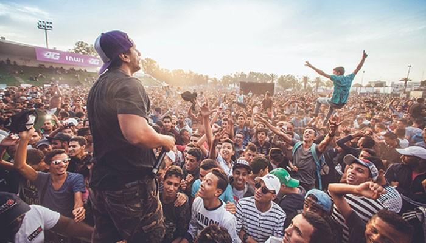

CITY OF CULTURE

Film culture
In the first half of the 20th century, Casablanca had many movie theaters, such as Cinema Rialto, Cinema Lynx and Cinema Vox—the largest in Africa at the time it was built
Learn more

Theatre culture
Tayeb Saddiki, described as the father of Moroccan theater, grew up in Casablanca and made his career there. Hanane el-Fadili and Hassan El Fad are popular comedians from Casablanca.
Learn more

Ultras culture
The Green Boy Ultras are one of the most visual groups of supporters in world football. Not only do Raja's attendances dwarf those of other Moroccan sides, their level of excitement is second to none. On any given match day, the Stade Mohamed V transforms into a cauldron as thunderous chants pierce the air on a sea of green smoke.
Learn more

Music Culture
Haja El Hamdaouia, one of the most iconic figures in aita music, was born in Casablanca. Nass El Ghiwane, led by Larbi Batma, came out of Hay Mohammadi in Casablanca.
Hoba Hoba Spirit
also formed in Casablanca, and is still based there. Casablanca has
a thriving hiphop scene, with artists such as
El Grande Toto, Don Big,
7liwa, and
Issam Harris.
Learn more